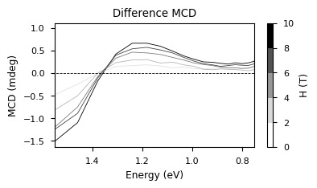
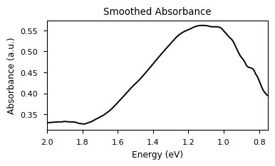
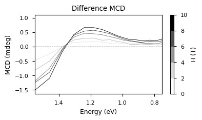
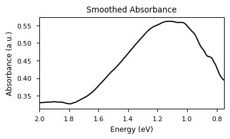
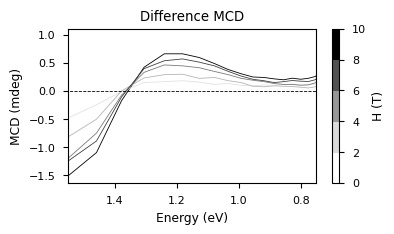
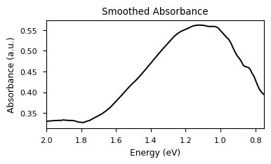
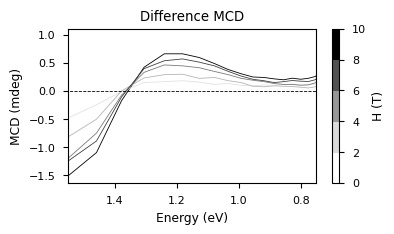
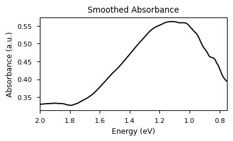

Comment for Dr. Stagg: Although the data is fit very poorly below, the function fit is correct to my knowledge. This seems to moreso show how badly the experiment data lines up with the fit. Definitely need to re-run these experiments. ¯\_(ツ)_/¯
From the above data:
The average Zeeman splitting energy is 0.051 ± 0.0030 meV.
The average effective mass (m*) is 2.299 ± 0.1334.